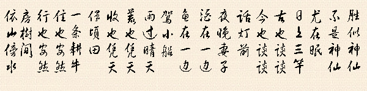

故事篇

流水账
不加分析的叙述和记载
满纸荒唐言，一把辛酸泪
都云作者痴，谁解其中味
—— 曹雪芹
九百多年前，北宋的一位画家，用长卷形式，以北宋汴京的城市面貌和当时社会各阶层人民的生活状况为素材，绘制了一幅传世风俗画。在这幅五米多长的画卷里，绘了数量庞大的各色人物，牛、骡、驴等牲畜，车、轿、大小船只，房屋、桥梁、城楼也各有特色，体现了宋代建筑的特征，具有很高的历史价值和艺术价值。这幅画就是清明上河图，这位画家便是张择端。清明上河图几乎无人不知无人不晓，但是这位画家却显得有点“名不见经传”。关于张择端本人，史书上没有任何的史料记载，这不得不说是个遗憾。 了解更多 还是九百多年前，和此画几乎同时问世的还有一部书-东京梦华录。《东京梦华录》是宋代孟元老的笔记体散记文，创作于宋钦宗靖康二年（1127年），是一本追述北宋都城东京开封府城市风俗人情的著作。所记大多是宋徽宗崇宁到宣和（1102-1125）年间北宋都城东京开封的情况，描绘了这一历史时期居住在东京的上至王公贵族、下及庶民百姓的日常生活情景，是研究北宋都市社会生活、经济文化的一部极其重要的历史文献古籍。《东京梦华录》所记述的，从都城的范围到皇宫建筑，从官署的处所到城内的街坊，从饮食起居到岁时节令，从歌舞曲艺到婚丧习俗，几乎无所不包，不仅可以了解当时的民风时尚，同时也能感受到宋代发达的经济和繁荣的城市生活。